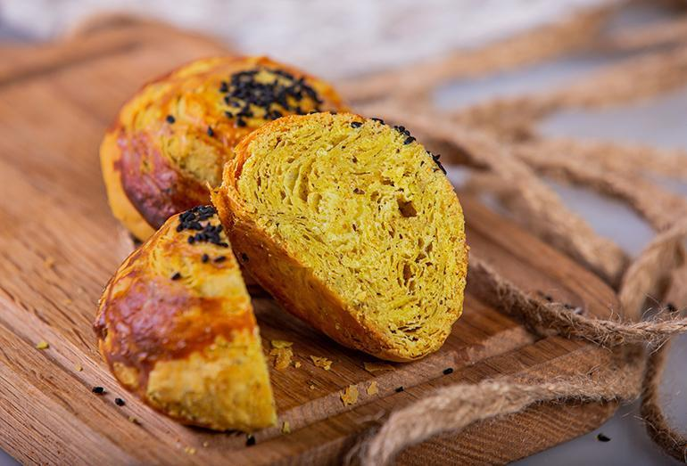

| TATLI | ÇORBA | ANA YEMEK |
|---|---|---|
|  |
|
|
|
|
||
|
|
|
Aroma of Azerbaijan'a Hoş geldiniz!
Azerbaycan'ın lezzetli dünyasına adım atın. Usta şeflerimiz tarafından hazırlanan geleneksel Azerbaycan mutfağının en iyi lezzetlerini keşfedin. Çorbalar, pilavlar, et yemekleri ve tatlılar... Her biri sizi cezbedecek eşsiz seçenekler sunuyor. Aroma of Azerbaijan, sıcak atmosferi ve müzikle dolu bir deneyim sunuyor. Lezzet dolu dünyamızda sizleri ağırlamaktan mutluluk duyarız. Hemen rezervasyon yapın ve Azerbaycan'ın lezzetlerine doygun bir yolculuk yapın!
Aroma of Azerbaijan:
Azerbaycan Mutfağına Yolculuk